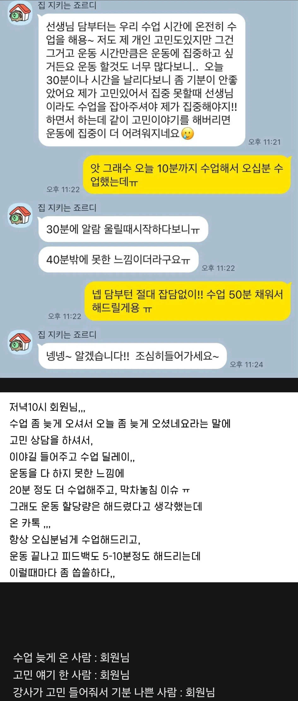

수업할땐 수업에만 집중해달라는 필라테스 회원님
댓글
병신
저런건 그자리에서 생색내줘야 뒤에서 저딴소리 안하려나 ㅡㅡ...그냥 해주면 해줘도 안해준줄아네
뭐 저런 ㅋㅋㅋㅋㅋ
심지어 수업시간도 다 채워서 해준거같네 ㅋㅋㅋㅋ

진짜 씨팔 힘들다 힘들어 ㅋㅋㅋㅋㅋㅋㅋㅋ
필테 강사는 남성회원들의 고백공격에도 자주 시달림
미친새끼구만
역시 잔잔하게 사람 좆같이 만드는건 여성 진상이 일류!
서비스직업인 사람 상대가 매우 힘듬
갑질하는 사람은 지가 갑질하는지를 모름
무지성 mbti 혐오일수도있는데
경험상 enfp들이 저지랄떠는경우 많은 것 같음
생각이 많고 외부자극보단 내면세계에 몰입하는 경향이 강한게 nfp특성인데 (지각 확률 높음, 어디에 집중하면 다른 일 잘 까먹음. 본문에서도 지각 + 고민상담에 몰두)
e속성붙으니까 할말이 존나게많아서
자기도 의도치않게 휩쓸리는 듯이 와다다다 하루종일 말만하는 케이스
집에와서 생각해보니
나는 운동하러 갔는데 말만하다왔네?
나는 말하다가 못멈추니까 네가 멈춰줬어야지?
하고 운동비 내고 지혼자 무토바 한게 현타와서 강사탓
저런 미친련들이 맘틀어지면 온갖 호작질 다 하고 다녀서 진짜 힘듬